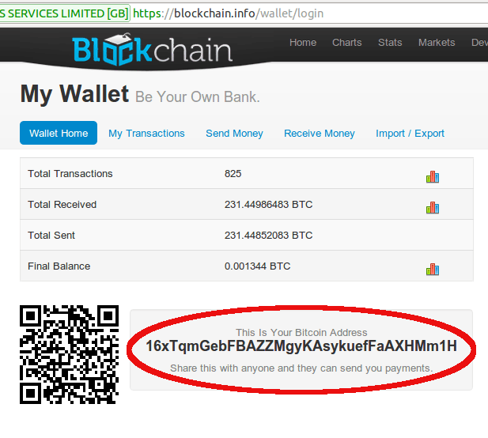
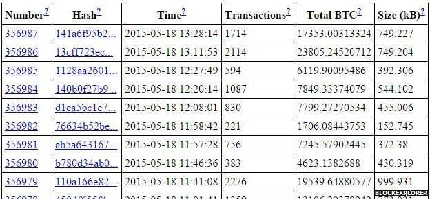
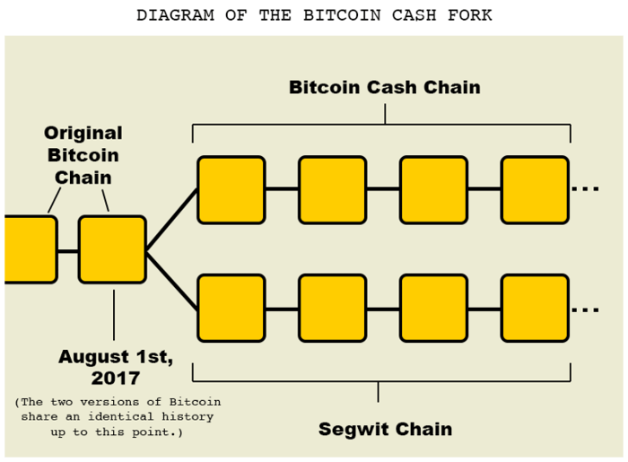

比特币入门（作者：阮一峰）
比特币诞生于2008年的一篇论文 一个署名为中本聪的人，提出了革命性的构想：让我们创造一种不受政府或其他任何人控制的货币！ 这个想法堪称疯狂：一串数字，背后没有任何资产支持，也没有任何人负责，你把它当作钱付给对方，怎么会有人愿意接受？
但是，狂想居然变成了现实。随后的几年，在全世界无数爱好者的支持下，比特币网络运行起来了，越来越多的人和资本参与，星星之火，终成燎原。刚刚过去的2017年，比特币迎来了爆发式的增长，从年初的1000美元，最高涨到了2万美元，全世界都为之震动，上到政府，下到普通百姓都在关注。事实就是比特币已经并将继续改变世界
新闻媒体往往只关注它的火爆表现，忽视或者无法回答一些基本的问题:
- 比特币的原理是什么？
- 为什么这个无人管理的体系可以成功运作？
- 比特币交易的流程是怎么回事？
- 它与区块链又是什么关系？
下面，将尝试回答这些问题，希望帮助大家理解比特币。抛开技术细节，还是很容易解释的
非对称加密
首先，理解比特币，必须理解 非对称加密
所谓非对称加密，其实很简单，就是加密和解密需要两把钥匙：一把公钥和一把私钥。 公钥是公开的，任何人都可以获取。私钥是保密的，只有拥有者才能使用 他人使用你的公钥加密信息，然后发送给你，你用私钥解密，取出信息 反过来，你也可以用私钥加密信息，别人用你的公钥解开，从而证明这个信息确实是你发出的，且未被篡改，这叫做数字签名
现在请设想，如果公钥加密的不是普通的信息，而是加密了一笔钱，发送给你，这会怎样？
- 你能解开加密包，取出里面的钱，因为私钥在你手里
- 别人偷不走这笔钱，因为他们没有你的私钥。因此，支付可以成功。
这就是比特币的原理： 非对称加密 保证了 支付的可靠性
由于支付的钱必须通过私钥取出，所以你是谁并不重要，重要的是谁拥有私钥。只有拥有了私钥，才能取出支付给你的钱 事实上，真实的交易流程稍有不同，私钥保证的不是取出支付给你的钱，而是保证只有你能把这些属于你的钱支付出去
比特币钱包
对于比特币来说，钱不是支付给个人的，而是 支付 给某一把 私钥 。这就是 交易匿名性 的根本原因，因为没有人知道，那些私钥背后的主人是谁
所以，比特币交易的第一件事，就是你必须拥有自己的公钥和私钥
去网上那些比特币交易所开户，它们会让你首先生成一个 比特币钱包 。这个钱包不是用来存放比特币，而是 存放 你的 公钥 和 私钥 。软件会帮你生成这两把钥匙，然后放在钱包里面
根据协议，公钥的长度是512位。这个长度不太方便传播
因此协议又规定，要为公钥生成一个 160位 的 指纹
所谓指纹，就是一个比较短的、易于传播的哈希值。160位是二进制，写成十六进制，大约是26到35个字符，比如 1BvBMSEYstWetqTFn5Au4m4GFg7xJaNVN2
这个字符串就叫做 钱包的地址 ，它是 唯一 的，即每个钱包的地址肯定都是不一样的

你向别人收钱时，只要告诉对方你的钱包地址即可，对方向这个地址付款。由于你是这个地址的拥有者，所以你会收到这笔钱
由于你是否拥有某个钱包地址，是由私钥证明的，所以一定要保护好私钥 这是极其重要的，如果你的私钥被偷了，你的比特币也就等于没了，因为他人可以冒用你的身份了，把钱包里面的钱都转走 同样的，你向他人支付比特币，千万不能写错他人的钱包地址，否则你的比特币就支付到了另一个不同的人了
交易过程
一笔交易就是一个地址的比特币，转移到另一个地址。由于比特币的交易记录全部都是公开的，哪个地址拥有多少比特币，都是可以查到的。因此，支付方是否拥有足够的比特币，完成这笔交易，这是可以轻易验证的
问题出在怎么防止其他人，冒用你的名义申报交易 举例来说，有人申报了一笔交易：地址 A 向地址 B 支付10个比特币。怎么知道这个申报是真的，申报人就是地址 A 的主人？
比特币协议规定，申报交易的时候，除了交易金额，转出比特币的一方还必须提供以下数据：
- 上一笔交易的 Hash ： 从哪里得到这些比特币
- 本次交易 双方的地址
- 支付方的 公钥
- 支付方的 私钥 生成的 数字签名
经过下面三步，就可以认定这笔交易是真实的
- 找到 上一笔交易 ，确认 支付方的比特币来源
- 算出 支付方 公钥的指纹 ，确认与 支付方的地址一致 ，从而保证 公钥属实
- 使用 公钥 去 解开 数字签名 ，保证 私钥属实
交易确认与区块链
确认交易的真实性以后，交易还不算完成。交易数据必须持久化，才算成立，对方才能真正收到钱
比特币使用的是一种特殊的数据库，叫做区块链
所有的交易数据都会传送到矿工那里。矿工负责把这些交易写入区块链
根据比特币协议，一个区块的大小最大是1MB，而一笔交易大概是500B左右，因此一个区块最多可以包含2000多笔交易
矿工负责把这2000多笔交易打包在一起，组成一个区块，然后计算这个区块的哈希

计算哈希的过程叫做采矿，这需要大量的计算。矿工之间也在竞争，谁先算出哈希，谁就能第一个添加新区块进入区块链，从而享受这个区块的全部收益，而其他矿工将一无所获。一笔交易一旦写入了区块链，就无法反悔了
这里需要建立一个观念：比特币不存放在钱包或其他别的地方，而是只存在于区块链上面 区块链记载了你参与的每一笔交易，你得到过多少比特币，你又支付了多少比特币，因此可以算出来你拥有多少资产
矿工的收益
交易的确认离不开矿工。为什么有人愿意做矿工呢？
比特币协议规定，挖到新区块的矿工将获得奖励，一开始（2008年）是50个比特币，然后每4年减半，目前（2018年）是12.5个比特币。这也是比特币的供给增加机制，流通中新增的比特币都是这样诞生的。
每4年奖励减半，由于比特币可以分割到小数点后八位，那么到了2140年，矿工将得不到任何奖励，比特币的数量也将停止增加 这时，矿工的收益就完全依靠交易手续费了
所谓 交易手续费 ，就是 矿工 可以从 每笔交易抽成 ， 具体的金额 由 支付方 自愿决定
你完全可以一毛不拔，一分钱也不给矿工，但是那样的话，你的交易就会没人处理，迟迟无法写入区块链，得到确认 矿工们总是优先处理手续费最高的交易
目前由于交易数量猛增，手续费已经水涨船高，一个区块2000多笔交易的手续费总额可以达到3～10个比特币。如果你的手续费给低了，很可能过了一个星期，交易还没确认
一个区块的奖励金12.5个比特币，再加上手续费，收益是相当可观的 按照目前的价格，可以达到100万～200万人民币 想想看，运气好的话，几分钟就能挖到一个区块，拿到这样一大笔钱，怪不得人们对挖矿趋之若鹜
区块的扩容
比特币协议规定，平均10分钟诞生一个区块。区块的大小只有1MB，最多只能包含2000多笔交易 也就是说，比特币网络每10分钟，最多只能处理2000多笔交易，换算一下，就是处理速度为3～5笔/秒 全世界的比特币交易这么多，可是区块链每秒最多只能处理5笔，这已经成为制约比特币发展的一个瓶颈
很早就有人呼吁，改革比特币协议，提升处理速度。这件事在2017年8月有了一点眉目，当时区块链发生了一次分叉，诞生了一个新协议，称为 Bitcoin Cash （简称 BCH）。这种新货币其他方面都与比特币一致，就是每个区块的大小从 1MB 增加到了 8MB，因此处理速度提升了8倍，手续费也低得多。该协议是对原有区块链的分叉，因此当时持有比特币的人，等于一人获赠了一份同样数量的 BCH

BCH 等于创造了一种新货币，还有人提议，原始比特币的区块大小提升到 2MB，这称为 SegWit2x 这个建议原定于2017年11月实施，但是最后一刻由于缺乏共识，就被取消了，目前还在讨论中
点对点网络
比特币是一个全世界的开放网络，只要你有服务器，就能加入这个网络，成为一个节点。每个节点都包含了整个区块链（目前大概 100多 GB），并且节点之间时刻不停地在同步信息
- 当你发生了一笔支付，你所在的节点就会把这笔交易告诉另一个节点，直至传遍整个网络
- 矿工从网上收集各种新发生的交易，将它们打包写入区块链
- 一旦写入成功， 矿工所在节点的区块链，就成为最新版本，其他节点都会来复制新增的区块，保证全网的区块链都是一致的
- 你所在的节点也拿到了最新的区块链，从而得知你早先的那笔交易，已经写在里面了，至此交易确认成功
遗留的问题
写到这里，就介绍完了比特币的基本知识。但是还有一个根本的问题，比特币的本质到底是什么？
说到底， 比特币 只是 区块链的一条记录 ，是凭空生成的
为什么可以当钱用？ 举例来说，矿工获得12.5个比特币的奖励，其实就是区块链有一个记录："xxx地址获得12.5个比特币"，正是这行记录，导致该矿工获得了大笔金钱 如果区块链突然增加了一条记录，记载你的地址获得了1000个比特币，你就真的会有1000个比特币。这到底是为什么？